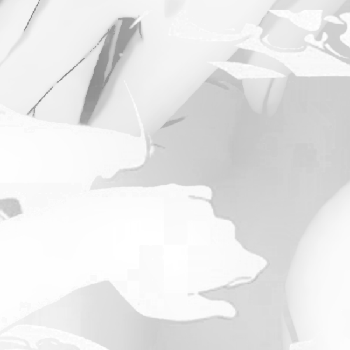

Untitled (the blue)
2021.10.25
the blue of the water glistens on my hand
it glows
i reach out
my hand shakes
you quiver with a cinch
to a touch of no malice
ripples moving along
a glow blinds my eye as yours is too
—what are you
